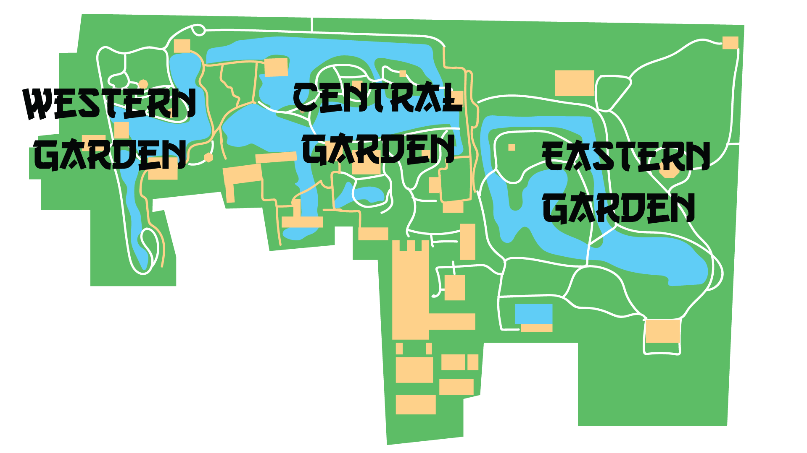

The Humble Administrator’s Garden resides in the historic city of Suzhou, along the Yangtze river in southeastern China. It is actually the largest garden in Suzhou, covering almost 13 acres. Three fourths of this is taken up by water features, with the rest containing a variety of pavilions, halls, bridges, and landscaping.
Like many of its contemporaries, this garden was built as a sort of relaxation home for a retired politician. A public servant named Wang Xianchen had it built in 1509 ce as a place to garden after working in the northern capital of Beijing his whole life. As such, this garden rejects the regiment and order that characterizes the gardens of the north, in favor of a more winding layout. It is this lack of grandeur and extravagance that gives the garden its name.
You can learn more about the history of chinese gardens and their characteristics by clicking here.
Three Distinct Sections

While the site has been renovated over the centuries, it maintains 3 distinct sections:
Western Garden
This garden is covered mostly in water, a pond which contains a small island. Also known as the ‘Supplementary Garden’, it is only about half the size of the central garden. The main feature of this garden other than the pond is Mandarin Duck (Yuanyang) Hall, from which the pond’s ducks can be fed. This section is entered through a traditional 'moon gate'. From here, a series of meandering pathways follow the edge of the lake and link the various buildings of this garden together.
Central Garden
Like the western garden, this section is also dominated by water. This pond however is filled with lotus plants, and is the oldest section of the three. Key to this section is the Hall of Distant Fragrance, used to observe the garden with both the eyes and nose. Another standout feature are the variety of bridges that link the pool’s islands together. There is the Flying Rainbow Bridge, named for its distinctive shimmering reflection. There are also a handful of zig zagging walkways, which allow one to take in the surroundings rather than focus on the destination.
Eastern Garden
This area features a large space of grass and bamboo, surrounding a series of reflection ponds. This section is the largest due to the expanse of green, but also contains the fewest buildings. A few isolated pavilions dot the landscape, making this the most secluded area of the garden.
Bibliography
Clunas, Craig. Fruitful Sites: Garden Culture in Ming Dynasty China. Durham: Duke UP, 1996. Web. http://vdisk.weibo.com/s/u8bWoDoF4SsV?from=page_100505_profile&wvr=6
Craig, Robert M. "Passages To A Different Universe: The Three Gardens Of Zhuo Zheng Yuan, Suzhou." Southeastern College Art Conference Review 11.3 (1988): 222-229. Art & Architecture Complete. Web. 28 Oct. 2015.
Keswick, Maggie, and Charles Jencks. The Chinese Garden: History, Art & Architecture. New York: Rizzoli, 1978. Print.
Lou, Qingxi, and Lei Zhang. Chinese Gardens. Beijing: China Intercontinental Pr., 2003. Print.
Sui, Yu., and Wei Xun. Chinese Gardens. Hong Kong: Design Media Pub., 2010. Print.
Wang, Qijun. Chinese Architecture. New York: Better Link Press, 2011. Print.
Yu, Yali., Rolf Reiner, and Maria Borchard. Gardens in Suzhou =: Gärten in Suzhou. Stuttgart: Edition Axel Menges, 2003. Print.
Zhang, Liping. "The Garden Ambassadors." Beijing Review 51.30 (2008): 25. Academic Search Complete. Web. 28 Oct. 2015.
Photo Credits
https://en.wikipedia.org/wiki/Humble_Administrator%27s_Garden https://kevinjames.files.wordpress.com/2009/02/suzhou_humble-garden.jpg
https://facetstudio.wordpress.com/2011/01/30/suzhou-zhuo-zheng-yuan-humble-administrators-garden-%E8%98%87%E5%B7%9E-%E6%8B%99%E6%94%BF%E5%9C%92/
http://www.orientalarchitecture.com/china/suzhou/humble-administrator.php
http://www.51766.com/img/pmjq/20040706pan-.jpg
http://ncvpsapwh.pbworks.com/f/Ming%20dynasty%20map.jpg
https://bellaispirazionedotcom.files.wordpress.com/2015/09/dsc09361.jpg
http://ciee.typepad.com/.a/6a010536fa9ded970b015435b468ea970c-pi
https://0nhiatus.files.wordpress.com/2015/05/img_5775.jpg
http://photovoltaicpoetry.com.au/wp-content/uploads/2013/08/Garden-of-Humble-Administratorcircular-door.jpg
http://cache4.asset-cache.net/gc/490630379-mandarin-duck-hall-in-the-humble-gettyimages.jpg?v=1&c=IWSAsset&k=2&d=ORzOlTGuK%2Fpu9tflvPPX8cFR8dCTKNfpf682rEXW3DM9PeRuBMHWtq853zOW7uCD